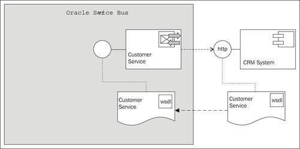
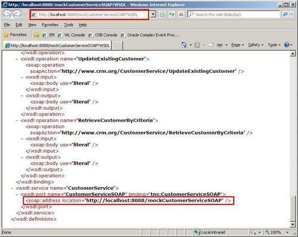
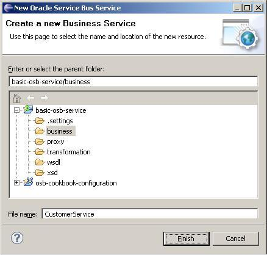
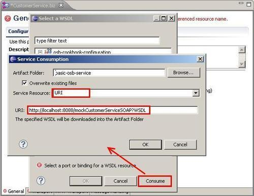
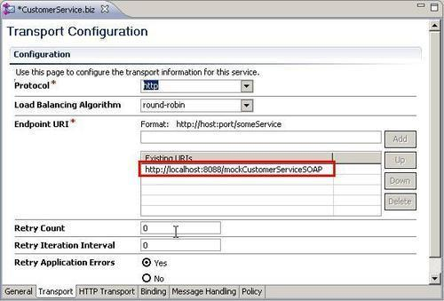

With the basic folder structure of the OSB project in place, we are ready to create our first OSB service. We will start with the business service Customer Service which will act as a wrapper of the external service. Business services in OSB are required definitions to exchange messages with enterprise information systems—such as databases and queues or other web services. The external service is a web service offered by a fictive CRM system. The business service will allow the definition of all sorts of properties for controlling how the external service is invoked:

Make sure that the external web service we want to invoke is started by running the script \chapter-1\getting-ready\misc\customer-external-webservice\start-service.cmd. This service is implemented using soapUI's capabilities for creating mock services.
Verify that the service is running and available by asking it for its WSDL definition. Enter the following URI in a browser window: http://localhost:8088/mockCustomerServiceSOAP?WSDL:

In Eclipse OEPE, perform the following steps:
CustomerService into the File name field, check a second time that the business folder is selected, and click on the Finish button:
business folder and the editor for the business service opens automatically.
CustomerService.wsdl into the New name field of the pop-up window and confirm.
The business service acts as a wrapper of our external service. Once created, we will no longer have to use the WSDL to refer to the external service, but can use the business service. This forms an additional abstraction layer, which will become handy later in some of the more advanced recipes to enable functionality in the OSB, which is applied before the real endpoint is invoked, such as SLA monitoring, service throttling, service pooling, and others. Sentence is too long, runs on too long. Would be better split into two sentences.